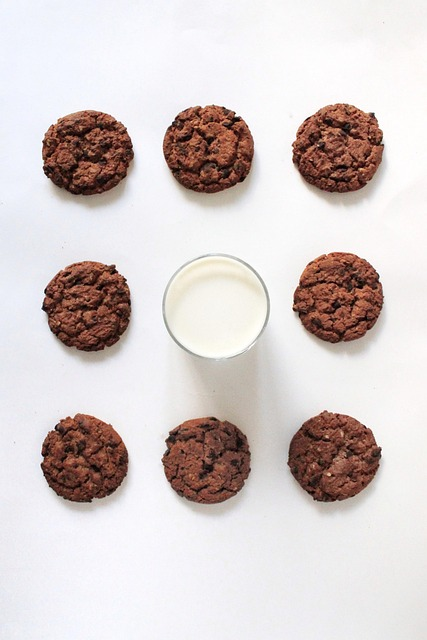

Vegan Udon Noodles

FreeToUseSounds
Pixabay
Description
Hearthy udon noodles soup featuring silken tofu and plenty of vegetables
Ingredients
- Shiitake mushrooms
- Udon noodles
- Vegetables
- Silken tofu
- Soy sauce
- Vegetable broth
Steps
- Bring a pot of water to boil
- Put all the ingredients except the noodles in the pot, boil for 30 minutes
- Add the noodles and let it all cook for 10 more minutes
Home